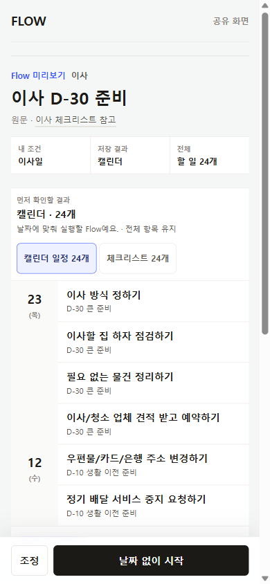
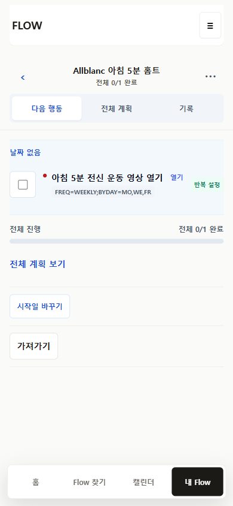

같은 원문 identity 분기
Home, Find, URL lookup이 서로 다른 slug와 24개/5개 버전을 연다.
CURRENT PRODUCTION INTERACTION · 2026-07-24
최신 production을 모바일 390px에서 직접 조작했다. P32 My Flow workspace는 작동하지만, 그 앞 단계에서 같은 원문이 서로 다른 title, 항목 수, 저장 객체로 갈라진다.
현재 결정은 Flow Map을 내부 bundle로 두고 모든 표면에서 하나의 사용자 Flow object를 사용하도록 정한다. production은 이 계약을 아직 충족하지 않는다.
Home, Find, URL lookup이 서로 다른 slug와 24개/5개 버전을 연다.
두 entry를 모두 저장하면 완료·날짜·메모가 연결되지 않는 별도 객체 두 개가 남는다.
moving과 vehicle의 체크리스트 버튼은 눌러도 selected projection이 바뀌지 않는다.
9개 중 5개는 legacy Flow Map, 4개는 current public artifact-first frame이다.
필요할 때 쓰는 차량 체크리스트라고 소개하지만 실제 기본 결과는 검사일 기준 D-14 Calendar다.
Calendar occurrence는 생성되지만 날짜 없는 My Flow에서는 RRULE 원문이 사용자에게 노출된다.




| 항목 | 판정 | 현재 상태 |
|---|---|---|
| 홈과 Find 역할 구분 | partial | 화면 역할은 나뉘었지만 콘텐츠 identity가 다름 |
| 같은 card의 같은 저장 결과 | missing | moving 24/5 및 중복 저장 |
| 결혼 참고표 별도 entry | supported | timeline과 4-item sheet가 분리됨 |
| public 전체 결과 먼저 보기 | supported | `/f`는 실제 artifact preview를 먼저 표시 |
| Flow 찾기 조정 | partial | legacy 5개 route는 이름과 포함 여부 중심 |
| 결과 형태 실제 선택 | partial | wedding/workout은 작동, moving/vehicle은 작동하지 않음 |
| 운동 recurrence와 Calendar | partial | 회차 생성은 작동, My Flow 문구 projection 불일치 |
| My Flow focused workspace | supported | 한 객체를 연 뒤 구조는 개선됨 |
| upstream 중복 객체 방지 | missing | P32 downstream workspace로 해결할 수 없음 |